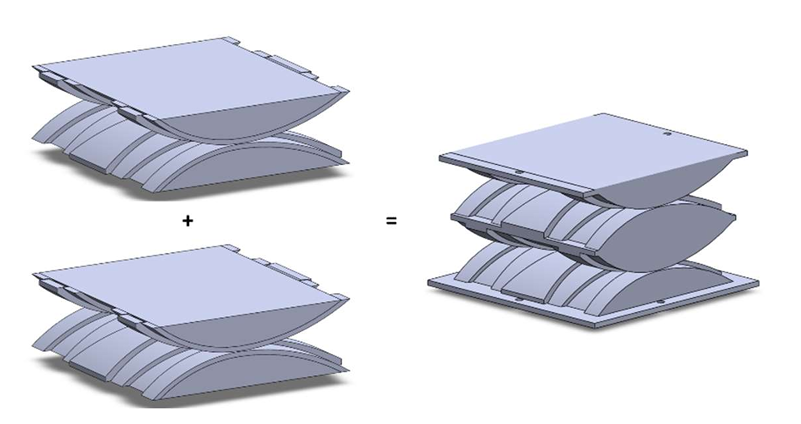
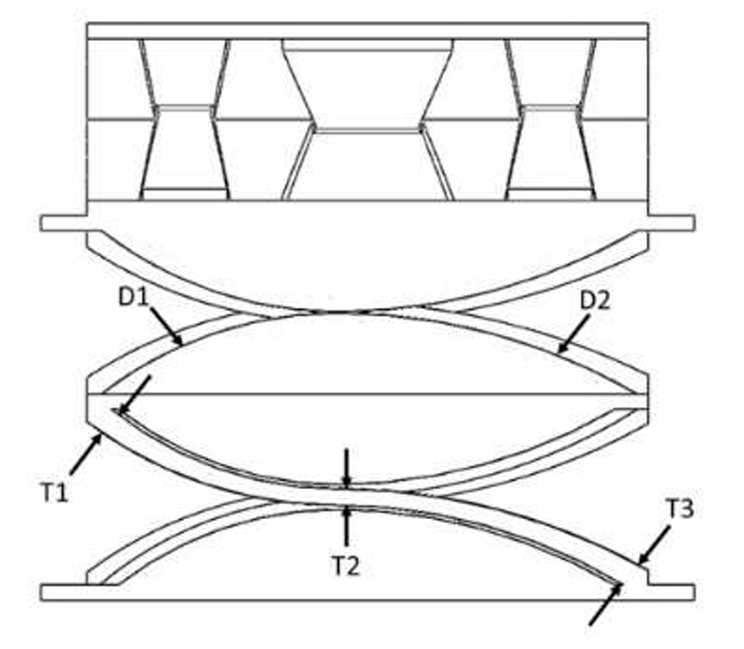
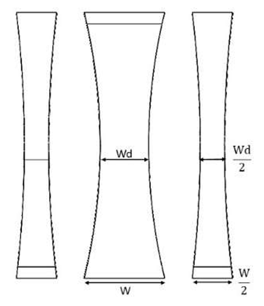
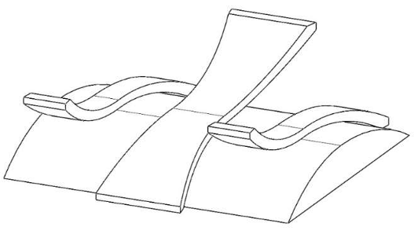
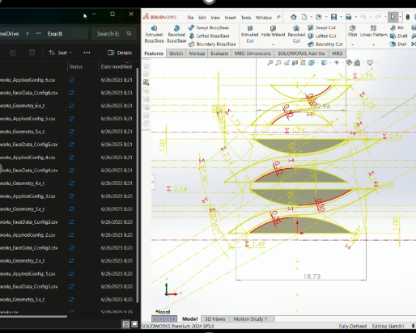
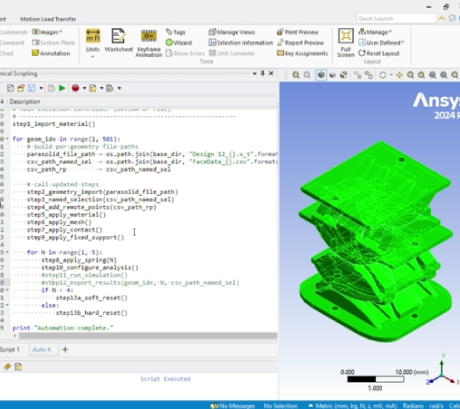
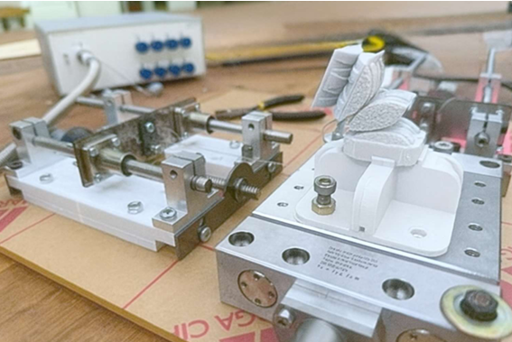
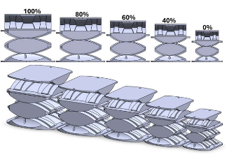
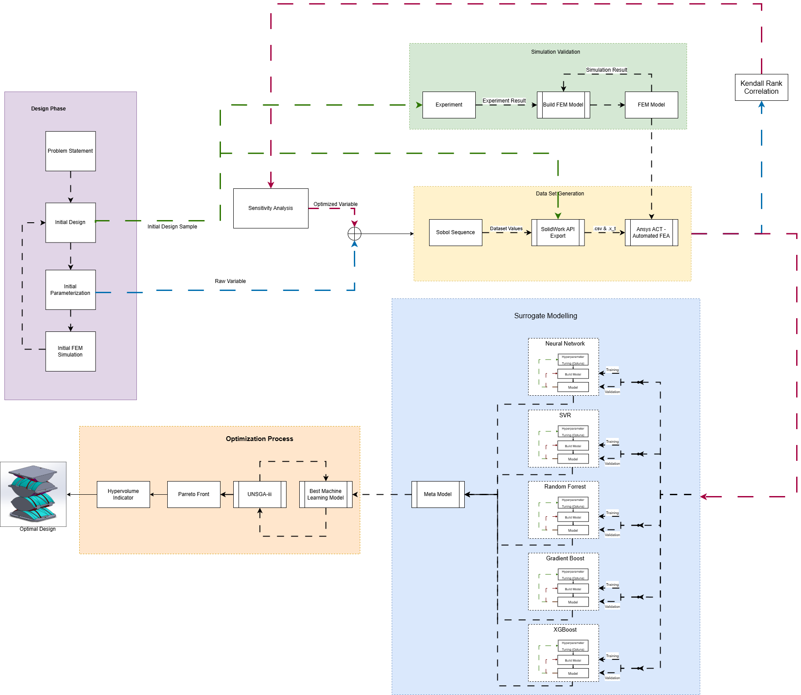

Automated CAD–CAE & Surrogate-Assisted Optimization
Compliant Prosthetic Wrist
Developed a two-DoF compliant wrist and an automated design workflow to optimize geometry for user size, motion, and stiffness targets.
OVERVIEW
Developed a two-DoF compliant prosthetic wrist with an automated CAD–CAE and surrogate-assisted optimization workflow to adapt its geometry to different user sizes while meeting motion and stiffness targets.
Mechanism Development
Asymmetric rolling profiles tune directional motion. Two stacked modules provide flexion–extension; an orthogonal module adds radial–ulnar deviation, creating a two-DoF compliant wrist.


Parametric Design
Parameterized wrist size, rolling profiles, and flexure dimensions through 21 geometric variables in a master sketch, enabling automated design variation.



Automated CAD–CAE
Linked SolidWorks API and ANSYS ACT through geometry and face metadata, automating boundary conditions, contacts, meshing, solving, and response extraction across four motion directions.


Experimental Setup
Built a motor-driven tendon-pulling rig with inline force measurement to test the printed prototype’s range of motion.


Scalable Designs
Generated five optimized wrist sizes with prescribed motion and stiffness targets. Independently re-evaluated each geometry using FEA to check surrogate-based design predictions.

Surrogate-Assisted Optimization
Trained machine-learning surrogates on FEA data and integrated them with U-NSGA-III to optimize range of motion and initial/final stiffness under stress constraints.
